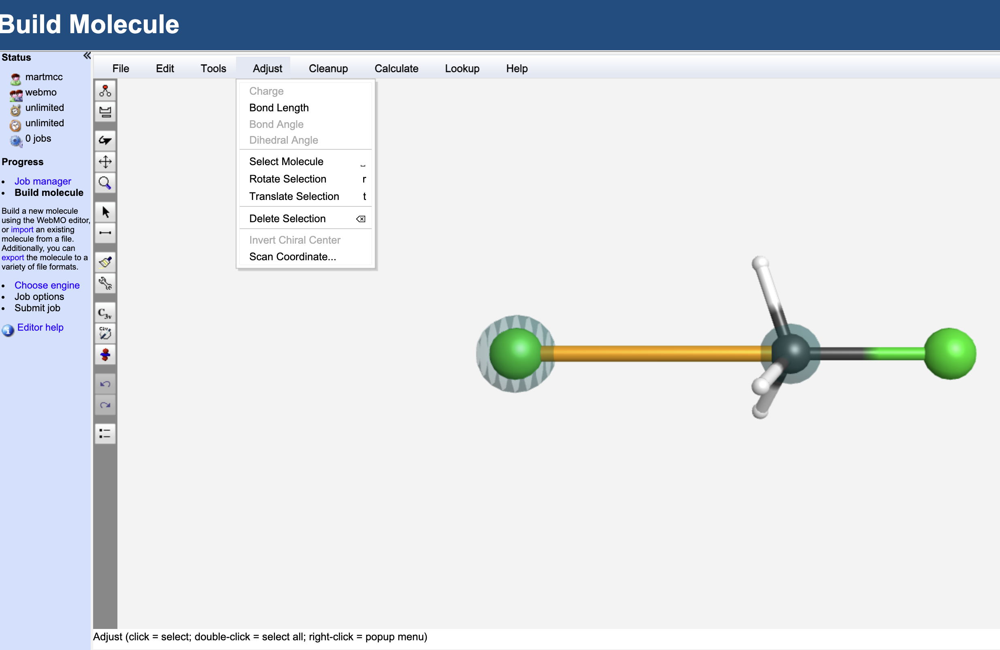
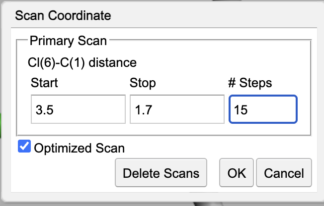
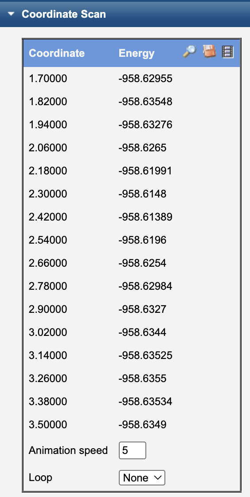
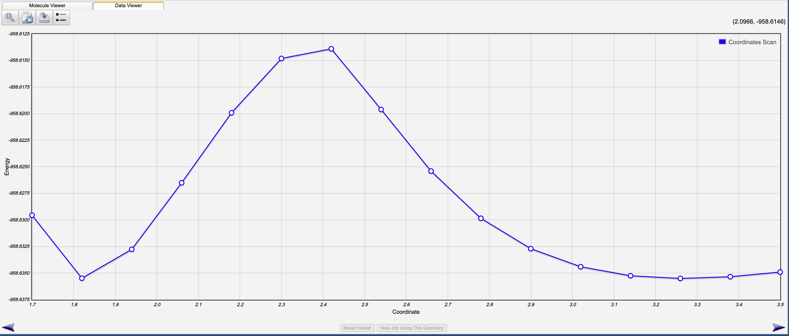

5.3.11. Week 7: Advanced WebMO – PES Mapping with Coordinate Scans (SN2 Example)#
5.3.11.1. Learning Goals#
By the end of this activity, you should be able to:
Perform geometry optimizations in WebMO for isolated reactants and reaction complexes.
Run vibrational frequency calculations and extract zero-point energy (ZPE) corrections.
Map a potential energy surface (PES) using a rigid internal-coordinate scan.
Interpret energy profiles in terms of minima, barriers, and chemical reactivity.
Distinguish between rigid and relaxed scans.
5.3.11.2. Background#
A potential energy surface (PES) describes how the energy of a molecular system changes as a function of nuclear coordinates. For a reaction, the PES connects:
Reactants → Transition State (TS) → Products
The activation energy is the energy difference between the reactant (or reactant complex) and the transition state.
In this activity, we will explore a classic SN\(_2\) reaction:
Yes — it’s symmetric (same nucleophile/leaving group), which makes it a clean model system for learning how to build and interpret energy profiles.
5.3.11.3. WebMO Setup Notes#
WebMO Pro version:
Use the same method/basis throughout unless instructed otherwise:
Method: HF
Basis set: 6-31G(d) (recommended)
Make sure you can locate, in your WebMO/Gaussian output:
SCF Done / Total electronic energy (Hartree)
Zero-point correction (Hartree), reported in the frequency job output
5.3.11.4. Part 1: Reactants – Separate Optimizations (CH3Cl and Cl⁻)#
5.3.11.4.1. Goal#
Before building the SN2 complex, you will compute the optimized geometry, electronic energy, and ZPE correction for each reactant separately:
Neutral methyl chloride, CH₃Cl
Chloride anion, Cl⁻
These values will be used later to estimate reaction and activation energetics.
5.3.11.4.2. Part 1A: Optimize CH₃Cl and Compute ZPE#
5.3.11.4.2.1. Step 1: Build CH₃Cl#
Open WebMO.
Use the builder to create CH₃Cl (methyl chloride).
Check the structure and connectivity.
Set total charge = 0 and multiplicity = 1.
5.3.11.4.2.2. Step 2: Geometry Optimization + Frequency Calculation#
Job Type: Optimize + Vib Freq
Method/Basis: HF/6-31G(d)
Run the optimization and record:
Optimized electronic energy: \(E_\mathrm{opt}(\mathrm{CH_3Cl})\)
Bond length: \(r(\mathrm{C{-}Cl})\)
Zero-point energy (ZPE) correction: \(\mathrm{ZPE}(\mathrm{CH_3Cl})\)
Confirm it is a minimum (no imaginary frequencies)
In Gaussian output, ZPE is typically reported as a “Zero-point correction” (Hartree). Record that value.
5.3.11.4.3. Part 1B: Compute Energy of Cl⁻#
5.3.11.4.3.1. Step 1: Build Cl⁻#
Create a single chlorine atom.
Set total charge = −1 and multiplicity = 1.
5.3.11.4.3.2. Step 2: Energy of Cl⁻#
Job Type: Molecular Energy (aka single point or single SCF optimization)
Method/Basis: HF/6-31G(d)
Record:
Optimized electronic energy: \(E_\mathrm{opt}(\mathrm{Cl^-})\)
Reminder: A monatomic species has no vibrational modes, so ZPE is 0.0 (or reported differently).
5.3.11.4.4. Checkpoint (Required)#
Before moving on, you should have these four values recorded:
\(E_\mathrm{opt}(\mathrm{CH_3Cl})\) and \(\mathrm{ZPE}(\mathrm{CH_3Cl})\)
\(E_\mathrm{opt}(\mathrm{Cl^-})\)
5.3.11.5. Part 2: Rigid Coordinate Scan (Internal Coordinate Scan)#
5.3.11.5.1. Goal#
Map out an approximate PES of Cl - CH\(_3\)Cl replacement
5.3.11.5.2. Step 1: Choose Your Starting Structure#
Use the optimized reactant complex from Part 2A as the starting point.
Add a Cl atom opposite the other Cl atom and colinear with the C-Cl bond

5.3.11.5.3. Step 2: Set Up a Rigid Scan#
Using the select (arrow) tool. Select the newly added Cl and the C atoms. They should be highlighted as in the image above.
In
Adjustmenu, selectScan Coordinate...and set the scan length to go from 3.5 to 1.7 with 15 points.Select the
Optimized Scanbutton. Your Coordinate Scan dialog box should look like:
Hit the
OKbutton to take you back to the molecule viewer.
Hint: Hit the C3V button to symmetrize the molecule. This will make subsequent calculations cheaper.
Hit right arrow twice to take you to the job configuration (you should be running Gaussian03).
Job Type: Coordinate Scan
Set total charge = -1 and multiplicity = 1.
Hit right arrow to run job
NOTE: This job will take a few minutes. It took 3:26 for mine to complete.
5.3.11.5.4. Step 3: Run and Extract Data#
Once the job is complete, hit the magnifying glass to look at the output.
Look for the Coordinate Scan ouput information.

select the movie reel icon to animate the scan
select the magnifying glass icon to see a plot of the energy as a function of C-Cl bond distance

Record:
A table of (distance, energy) values
Identify the highest-energy point along the scan
5.3.11.5.5. Interpretation Questions#
Where is the energy lowest along your scan?
Where is the energy highest?
What does the maximum correspond to chemically?
5.3.11.6. Part 3: Optimizing the Transition State#
Now we will determine the actual transition state and record the energy and ZPE.
5.3.11.6.1. Part 3A: Build and Optimize the Transition State (aka activated complex)#
Find the geometry from your scan that is closest to the maximum energy
Start a new job from this position
Record the two C-Cl bond lengths. We will want to set these to be exactly the same (choose the average of the two values). Select each C-Cl bond and modify the bond lengths using the appropriate options from the
Adjustmenu.Symmetrize the molecule. Hopefully a
D3hoption is available on the left-hand side.Select the right arrow twice to move to job configuration.
Job Type: Optimize + Vib Freq
Set total charge = -1 and multiplicity = 1.
Hit right arrow to run job
Record:
\(E_\mathrm{opt}(\text{reactant complex})\)
ZPE
Key distances:
Incoming \(r(\mathrm{C{-}Cl_{in}})\)
Leaving \(r(\mathrm{C{-}Cl_{out}})\)
Tip: This step is very sensitive to the starting geometry. Ideally, the Chlorine atoms are equidistant from the Carbon atom and the hydrogen atoms are in plane with the carbon atom.
5.3.12. Assignment (10 points)#
Your assignment is to do the same thing but this time for the reaction F\(^-\) + CH\(_3\)F \(\rightarrow\) F\(^-\) + CH\(_3\)F.
5.3.12.1. Part A: Reactants and Products with ZPE where appropriate (2 pts)#
CH₃F: Report \(E_\mathrm{opt}(\mathrm{CH_3F})\), \(\mathrm{ZPE}(\mathrm{CH_3F})\), and the C-F bond distance. (1.5 pts)
F⁻: Report \(E_\mathrm{opt}(\mathrm{F^-})\) (0.5 pts)
5.3.12.2. Part B: Scan PES (2 pts)#
Scan the addition of \(F^-\) to CH\(3\)F (scan at least from 3.0 to the native bond C-F bond distance in CH\(_3\)F)
Provide a plot of energy vs \(r(\mathrm{C{-}F_{in}})\). (1 pts)
Identify the approximate transition state (highest energy point) and explain what structure it corresponds to. (1 pts)
5.3.12.3. Part C: Optimize TS (2 pts)#
Take the structure closest to the barrier from Part B and perform a geometry optimization and frequency calculation to identify true TS.
F-CH₃-F⁻: Report \(E_\mathrm{opt}(\mathrm{F-CH_3-F^-})\), \(\mathrm{ZPE}(\mathrm{F-CH_3-F^-})\), the value of the imaginary frequency, and the C-F bond distances. (2 pts)
5.3.12.4. Part D: Concepts (4 pts)#
Determine ∆U for this reaction. Describe what ∆U of the reaction means and why the value you got makes sense.(2 pts)
Determine Ea, the activation energy, for this reaction. Describe what Ea of this reaction represents.(2 pts)
5.3.12.5. Submission#
Submit a short PDF (or similar) that includes:
Your recorded energies and ZPE corrections
The scan data (table or plot)
Brief answers to the conceptual questions
Screenshots of key WebMO results (optimized structures + scan output)